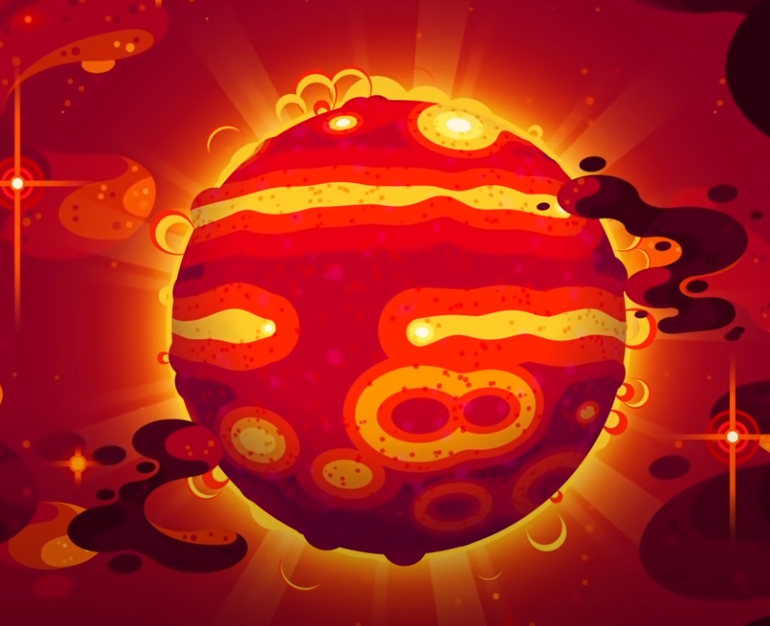

A legnagyobb hold (a naprendszerben)
Ganymedes
A Ganymedes a Jupiter holdja, a legnagyobb hold és a kilencedik legnagyobb égitest a Naprendszerben. Ha nem a Jupiter, hanem a Nap körül keringene, mérete alapján akár bolygóként is besorolható lenne, mivel a Mars háromnegyedét teszi ki, és nagyobb a Merkúrnál. Ez az egyetlen hold a Holdon kívül, amely ideális viszonyok között akár szabad szemmel is látható.
A legnagyobb bolygó
DENIS-P J082303.1-491201 b
A DENIS-P J082303.1-491201 b egy szubsztelláris objektum, amelyet exobolygónak vagy barna törpének minősítenek, és amely a DENIS-P J082303.1-491201, egy L1,5 típusú barna törpe körül kering a Vela csillagképben.A legnagyobb csillag
Stephenson 2-18
A Stephenson 2-18, egy vörös szuperóriás. A nyitott, Stephenson 2 klaszter közelében fekszik, amely 6000 parsek körül helyezkedik el a Földtől, és feltételezhetően egy hasonló távolságban lévő csillagcsoport egyikének tartozik. A legnagyobb ismert csillagok közé tartozik, és az egyik legfényesebb vörös szuperóriás, amelynek becsült sugara a Nap sugárzásának körülbelül 150-szerese, amely a Napnál közel 10 milliárdszor nagyobb térfogatnak felel meg. Ha a Naprendszer középpontjába kerül, annak fotoszférája elnyeli a Szaturnusz pályáját.
A legnagyobb feketelyuk
S5 0014+81
Az S5 0014+81 kvazár tömege 40 milliárdszorosa a Napnak, és az átmérője 236.39 milliárd km. Ez a kvazár 25,000-szer olyan fényes mint a Tejútrendszer 200 milliárd csillaga, vagyis ha 280 fényévre helyeznénk el a földtől, akkor ugyan olyan fényesen ragyogna, mint a Nap.
A legnagyobb galaxis
IC 1101
Az IC 1101 egy szuperóriási elliptikus galaxis az Abell 2029 galaxishalmaz középpontjában. A galaxis a Kígyó csillagképben található a Földtől 1,07 milliárd fényévre, és cD galaxisnak minősül. A galaxis átmérője körülbelül 5,5 millió fényév, ami jelenleg (2011) a legnagyobb ismert galaxis, szélességét tekintve. A galaxis mintegy 100 billió csillagot tartalmaz. Mérete a Tejútrendszernek az 50-szerese, tömege pedig a 2000-szerese.